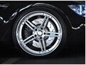
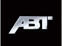
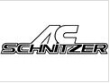
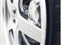

|  |
360 Forged轮毂品牌：360Forged生产国家：美国 360Forged公司主要以生产轻量化轮圈著称，拥有先进的碳铝锻造工艺，相比纯碳纤维轮圈拥有更低的价格，并经过8000吨压力机锻造成型，保证轮圈的超高强度和耐用...... 阅读全文>> |
|  |
ABT简介 ABT Sportsline为一家族企业，ABT就是这个家族的姓氏，1896年创立于南德巴伐利亚邦的坎普顿(Kempten)。ABT的历史可以追溯到1896年由一家制造马车零件的小铁工厂起家，随...... 阅读全文>> |
|  |
AC Schnitzer品牌：AC Schnitzer(亚琛施耐泽)特点：全球最大的BMW专业改装厂 在德国，像AC Schnitzer这样的改装厂商，不同于Hamann等为多家顶级品牌提供改装厂商，因为AC Schnitz...... 阅读全文>> |
|  |
ADV1轮毂轮毂品牌：ADV.1生产国家：美国售价：因轮毂尺寸差异会导致价格有所差别，平均每只轮毂价格在一万元以上。 也许很多人对ADV.1这个品牌比较陌生，相比其它轮圈品牌，ADV.1确实是一位“新人”，不过它...... 阅读全文>> |